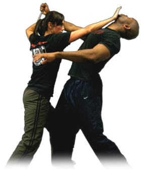

Defensa personal
La defensa personal es cualquier conjunto de técnicas que tienen como objetivo detener o repeler una acción ofensiva llevada a cabo contra la persona, puede depender exclusivamente del uso de nuestras extremidades y otras partes del cuerpo; pero por lo general implica también el uso de instrumentos diseñados para ese fin o inclusive objetos de uso cotidiano.
Cabe destacar algunos aspectos importantes:
1. No se trata de artes marciales, ya que estas en general son disciplinas competitivas donde sólo se entrenan y aplican técnicas de torneo, y se desarrollan en un ámbito protegido con profesores y árbitros, todo lo contrario de la Defensa Personal (DP).
2. Dada la relativa simplicidad de técnicas en la defensa persona, no se requieren gran cantidad de años de práctica para ponerlas en ejecución como en las artes marciales, donde el buen desempeño requiere de una formación atlética.
3. Aún así, para que en verdad sean efectivas las técnicas, deberán ser enseñadas por profesionales de la materia, practicadas y repasadas mentalmente todo cuanto sea posible, nadie puede esperar el adquirir conocimiento sólo con una leída.
4. Generalmente se deben realizar algunas prácticas técnicas con ropa similar a la que usamos habitualmente para salir a la calle, no con vestimentas de artes marciales.
5. Además se debe ir incorporando paralelamente, un pensamiento previsor, aplicables ante ataques en los lugares que frecuentamos y tenemos mayores posibilidades de ser victimizados.
En síntesis, es cuestión de dominar algunos movimientos físicos, pero también de estar preparados psicológicamente (atención y confianza) para reaccionar adecuadamente en situaciones de violencia.